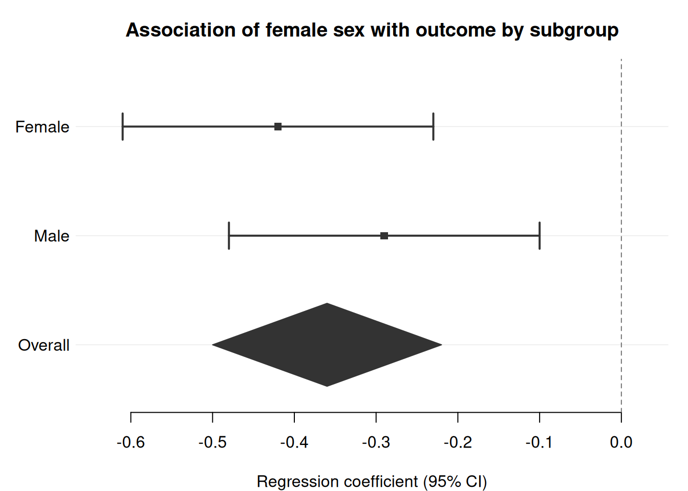
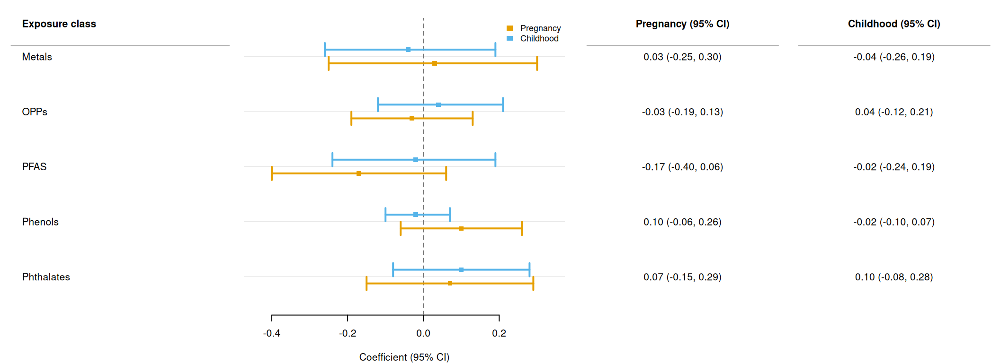

forrest creates publication-ready forest plots from any data frame that contains point estimates and confidence intervals. A single function, forrest(), handles the full range of use cases — regression model results, subgroup analyses, meta-analyses, dose-response patterns, and more.
The only hard dependency is tinyplot. forrest works with base R data frames, tibbles, and data.tables.
Basic forest plot
The simplest call requires only three column names: estimate, lower, and upper. Here we display adjusted regression coefficients from a linear model.
Rows whose estimate is NA become section headings. A non-empty label is rendered in bold as a group header; an empty label ("") creates a blank spacer line between groups.
Mark one or more rows with is_summary = TRUE to draw them as filled diamonds instead of squares. This is useful for pooled estimates in meta-analyses or for overall effects after subgroup rows.
sex_dat <-data.frame(label =c("Female", "Male", "Overall"),estimate =c(-0.42, -0.29, -0.36),lower =c(-0.61, -0.48, -0.50),upper =c(-0.23, -0.10, -0.22),is_sum =c(FALSE, FALSE, TRUE))forrest( sex_dat,estimate ="estimate",lower ="lower",upper ="upper",label ="label",is_summary ="is_sum",xlab ="Regression coefficient (95% CI)",title ="Association of female sex with outcome by subgroup")

Log scale for ratio measures
When plotting odds ratios, hazard ratios, or risk ratios, set log_scale = TRUE and ref_line = 1.
Set dodge = TRUE (or a positive number) when consecutive rows share the same label value. The CIs are vertically offset within each label band, and the label is displayed once at the group centre. Combine with group to colour the series.
A numeric value for dodge sets the vertical spacing between rows within a group directly (in y-axis units). dodge = TRUE uses the default of 0.25. Subgroup header rows (those with NA estimate) are always treated as singleton groups and are not affected by dodging.
Wide-format text columns alongside dodged CIs
By default, cols text values appear at each row’s dodged y position, keeping them aligned with their CI whiskers. Set cols_by_group = TRUE to collapse each text column to one value per label group instead — this produces a wide table with one row per label and one column per condition, matching the layout commonly seen in multi-period epidemiology papers.
Populate each text column so that the value is non-empty only for the matching condition’s row, and empty ("") for all others; forrest() picks up the right value automatically.
# Same long-format data as above — just add per-condition text columnsdodge_dat$est_ci <-sprintf("%.2f (%.2f, %.2f)", dodge_dat$estimate, dodge_dat$lower, dodge_dat$upper)dodge_dat$text_preg <-ifelse(dodge_dat$period =="Pregnancy", dodge_dat$est_ci, "")dodge_dat$text_child <-ifelse(dodge_dat$period =="Childhood", dodge_dat$est_ci, "")forrest( dodge_dat,estimate ="estimate",lower ="lower",upper ="upper",label ="exposure",group ="period",dodge =TRUE,cols_by_group =TRUE,cols =c("Pregnancy (95% CI)"="text_preg","Childhood (95% CI)"="text_child"),widths =c(2.5, 3.5, 2.2, 2.2),header ="Exposure class",ref_line =0,xlab ="Coefficient (95% CI)")

Point shapes
Pass a shape column to assign different point characters per category. Use together with group and dodge to encode two categorical dimensions at once — for example, colour = time period and shape = sex.
The shape legend appears at legend_shape_pos ("bottomright" by default). Set legend_shape_pos = NULL to suppress it.
Adding text columns
Use the cols argument — a named character vector mapping display headers to column names in data — to show formatted statistics alongside the plot. The header argument labels the row-label panel on the left.
Pass weight as a column name of numeric weights. Point size scales proportionally to sqrt(weight / max(weight)), so rows with larger weights appear with a bigger marker.